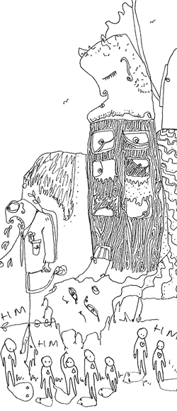

 image: Shantell M.“It's like... one long catwalk of H&M zombies. Where are all the individuals?”
14.02
I hope this is going to work. Feels kind of weird.
14.03
Rodney said this would be a good place to get pictures. Raffles[1]. Hm, Don’t know. Will have to wait and see.
14.05
Feel kind of wonky. What time is it back in London? Jet lag, a curse.
14.07
Not sunny, not dark. Light’s kind of OK.
14.10
People think this kind of photography[2] is so easy, that you just go out and there are stunners every five minutes.
14.20
Maybe I should have applied for a journalist’s visa. What happens if I get stopped and questioned?
14.40
Nothing yet. This is how a fisherman feels, waiting for the bait to get taken. Maybe I’m getting too old for this. I kind of feel like a dirty old man, stalking the streets. For ‘street-style’? Yeah, right. Oh, I’m getting paranoid.
14.41
Oh, here’s one. Nice bit of customising on the collar.
14.46
That was easy enough. Giving a card always helps.
14.48
And here’s another. Cool hair. Six hairstyles all on the same head. And, yep, some piece of crazy MADE IN HONG KONG plastic toy crap to accessorise. Coolio.
14.55
Nearly an hour, and that’s all I’ve got. There’s just so much black cotton about, black denim. Just black. Just nothing. Where are all the individuals?
13.01
It’s like… one long catwalk of H&M zombies. Where are all the individuals?
14.02
Oh, here’s one. Fabulous. Those shoes are just…
referenced works
- Raffles City is a large, high-rise shopping centre located in downtown Shanghai, across from People’s Square. ↩
- Paul Hartnett is a fashion photojournalist specializing in street and club culture; in essence, a coolhunter by trade. ‘Coolhunting’, as a term, was coined in the early 1990s and refers to the observation and prediction of existing and emerging cultural trends. Hartnett’s fashion photodocumentaries have appeared in Tank, Time and The Guardian. His photos from Shanghai appeared in the October 2007 issue of i-D and issue #3 of 100proofTRUTH, among others. ↩
location information
- Name: the Raffles department store at People's Square
- Time of story: Afternoon
- Latitude: 31.231900
- Longitude: 121.476700
- Map: Google Maps
014 “The pages are half-soaked in noodle water, the edges of the letters blurred. ”
013 “Hundreds of eyes continued to dart around me, hundreds of eyes continued to pass me over.”
012 “I could be anywhere, really. There are no landmarks here.”
011 “I strained to keep my eyes on that crazy perm but the automatic doors hissed shut and she was gone. ”
010 “How could these seemingly disparate worlds co-exist? Wouldn't they come together and explode like anti-matter?”
009 “It's strange how her hair seemingly reacts to her mood – her fountains wilt and slump when she is tired and grumpy. ”
008 “Your bones are cold.”
007 “Upon seeing the delinquent busker dragged from the scene with his trousers at his ankles, I felt lost. ”
006 “As we all stare at her open-mouthed, she starts to beg like a dog, barking and licking my hand. ”
005 “It's like... one long catwalk of H&M zombies. Where are all the individuals?”
004 “Like many aimless thirtysomethings, I balance violent fantasies of self-destruction with monthly pension payments. ”
003 “It was only a 10-minute bike ride from city centre, but 10 minutes in the wrong direction. ”
002 “I thought of the mutilated pig lying atop cardboard boxes of cereal and pasta, seeping trichinosis as the van bounced along. ”
001 “And then there is only tumbling, hexagonal cold.”

Write for Us!
We’re looking for short narratives describing pivotal moments of elation, confusion, absurdity, love or grief — or anything in between — inseparably tied to a specific place in Shanghai.
Shanghai:
Or receive updates by email
Addresses only used for the occational hitotoki mailing. Otherwise shoved behind the pitch black toilet in Boonna Cafe II.
A list of all available RSS feeds is on the about page
commentary